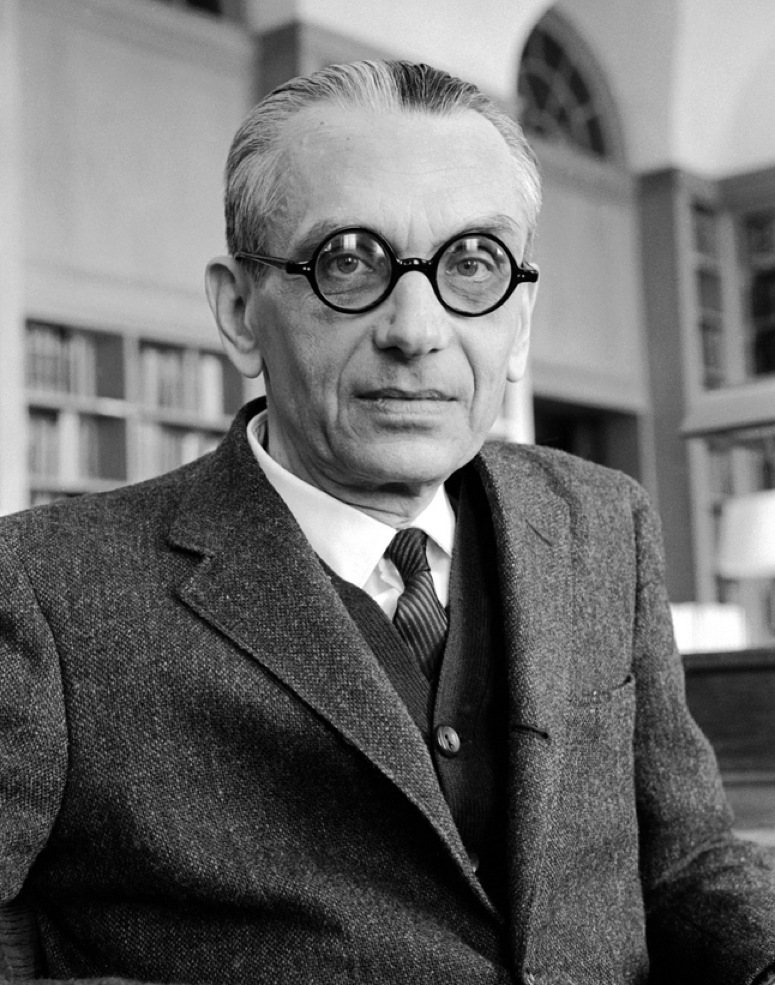

Kurt Gödel
Kurt Gödel (1906–1978) Personal Life and attributes
Kurt Gödel (1906–1978) was an important figure of modern mathematics, particularly in the early-to-mid 20th century. He was born in 1906 in Brno, Czechoslovakia, and died in 1978 in Princeton, New Jersey. He was of Austro-Hungarian origin and was a native German speaker at home and later in life.

Brno, Czechoslovakia in 1906 — Kurt Gödel's birthplace
Kurt Gödel's enhancements and innovations to modern mathematics
In the areas of math and logic, he had many achievements and specialized in mathematical reasoning. One of his more famous theorems was the Incompleteness Theorem, which followed logic and concluded that a system that uses basic arithmetic could not be proved using that same system. This mathematical reasoning created a huge leap for math in general. Also, he had other leads in mathematical developments like the constructible universe and set theory, which were discovered around 1938 to 1940 and published in the scientific community. This theorem stated that L (the constructible universe) is a model in which both axioms hold; it didn't prove they were true, but it showed they couldn't be disproved.